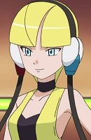
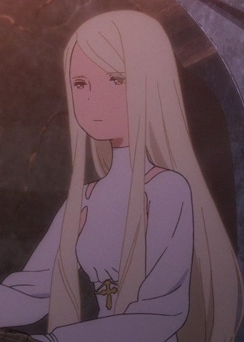
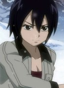

|
Cordelia Gallo |
|
Cordelia Gallo is the mother of Victoique. She was a dancer and her town was the village of Gray Wolves. She is very loving, caring person who is incredibly strong mentally and emotionally. She loves her daughter very much. |
 |
Eclipse Virgo |
|
Eclispe Virgo is the Eclipse form of Celestial Spirit Virgo. Her true desire is to grant the rogue Celestial King more power by stealing life force from the 12 Zodiac Spirit. |
|  |
Elesa |
- Pokemon Black and White 2: Introduction Movie
|
Elesa is the gym leader of Nimbasa City's Gym. She specializes in Electric-Type Pokemon. She is a supermodel. |
 |
Marley |
- Pokemon Diamond and Pearl
|
Marley is a Pokemon Trainer with an Arcanine. She befriended Shaymin by protecting it from thugs. She cares for Shaymin and wants to protect it from anyone who will harm it. |
|  |
Racine |
- Maquia - When The Promised Flower Blooms
|
Racine is the elder of Iorph, who is over 400 years old. She cares for the well being of those who she is responsible for. |
 |
Saber of Red |
|
Saber of Red is a servant of Kairi Shishigou of the Red Fraction in Turifas Holy Grail. Saber's identity is Mordred, the "son" of King Arthur. She is a female and told to hide her status and obey the King. She is extremely prideful and haughty, boasting herself to be equalor better than her father in ruling and swordmanship. Mordred has a brutal nature. |
 |
Shino Asada |
- Sword Art Online II
- Sword Art Online II: Debriefing
- Sword Art Online II: Sword Art Offline
- Sword Art Online Movie: Ordinal Scale
- Sword Art Online: Alicization
- Sword Art Online: Alicization - Reflection
- Sword Art Online: Alicization - War of Underworld
|
Shino Asada is a skilled URMMO player. Her nickname is Hecate, after her gun. She plays GGO to overcome her trauma concerning guns. Calm and cool are two words that best describe Sinon's personality. She can be extremely angry but has a friendly person. |
|  |
Ul |
- Fairy Tail
- Fairy Tail (2014)
- Fairy Tail: Final Season
|
Ul is a powerful ice mage. She trained Leon and Gray when they were young. She is upbeat, cheerful, abrasive, and humble. |
 |
Ultear Milkovich |
- Fairy Tail
- Fairy Tail (2014)
- Fairy Tail: Final Season
|
Ultear Milkovich is the daughter of Ur. She is manipulative, ruthless, and ambitious woman. She took in Meredy as her daughter, which her kind side. She was a former magic council member. |
 |
Virgo |
- Fairy Tail
- Fairy Tail OVA
- Fairy Tail the Movie: Phoenix Priestess
- Fairy Tail (2014)
- Fairy Tail Movie 2: Dragon Cry
- Fairy Tail: Final Season
|
Virgo is the maid celestial spirit. She takes the form that her master desire. She is a masochist. Virgo is very stiff and chastle. |
 |
Yu Lan Xia |
- Full Metal Panic! The Second Raid: Episode 00
- Full Metal Panic! The Second Raid
|
Yu Lan Xia is a Chinese-born assassin raised by Gauron alongside her twin, Yu Fan. She is an expect in usiong throwing knives and is fairly proficient in the use of small arms. |